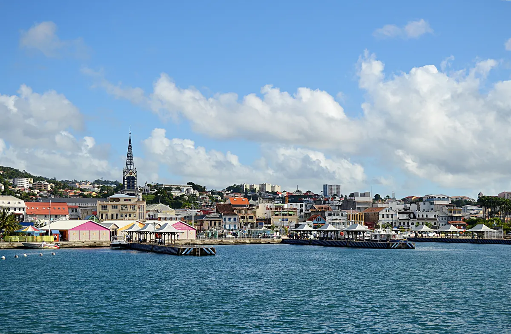
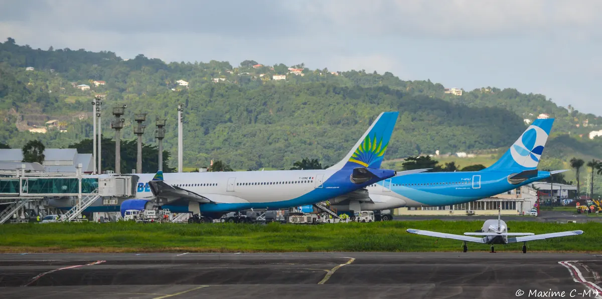
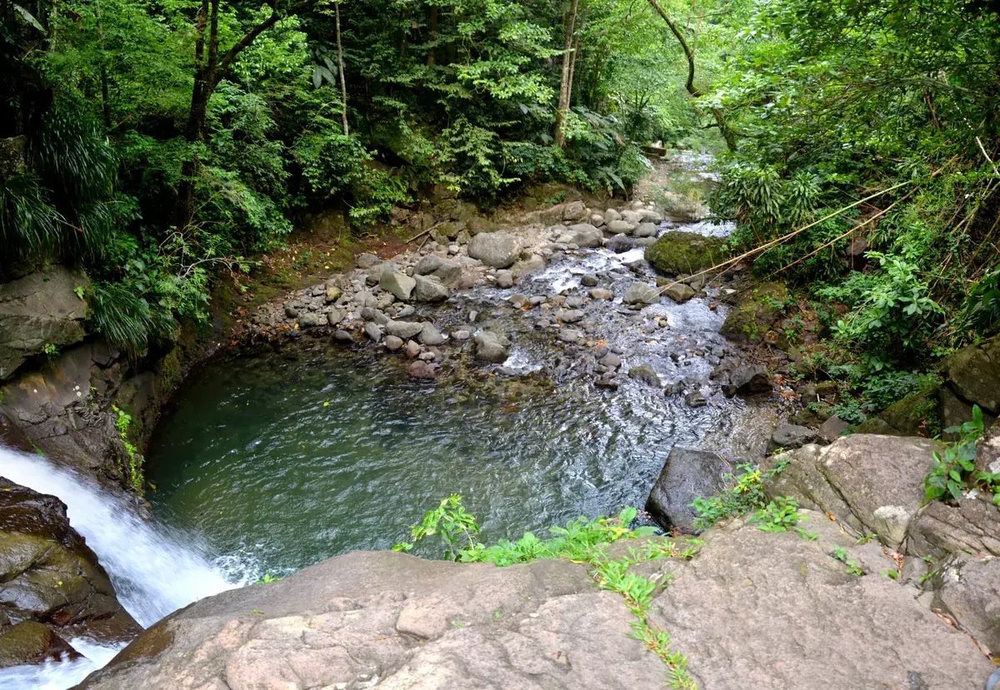
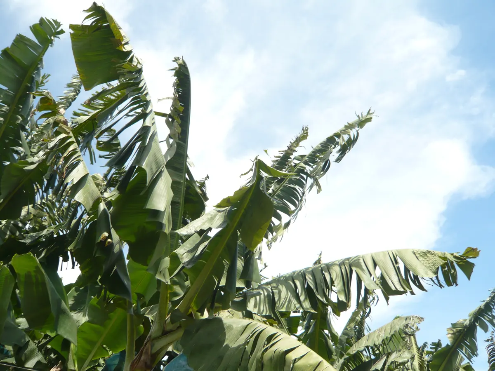
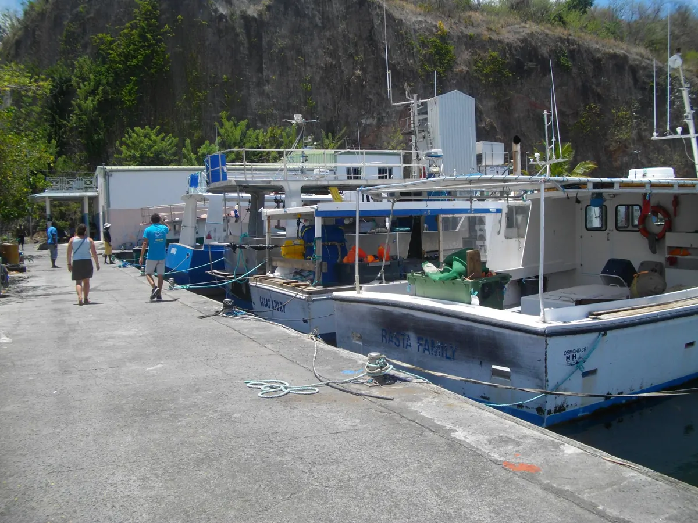

Diagnostic
Partir des faits, des chiffres publics et des besoins remontés par les communes.
Objectif CTM 2028
Une nouvelle génération politique pour ouvrir une ère de renaissance martiniquaise : produire ici, décider ici, réussir ici, avec sérieux, responsabilité et ambition.
Introduction institutionnelle
Le programme MADA 2028 n'est pas une addition de promesses. C'est un contrat politique destiné à préparer l'exercice des responsabilités au sein de la CTM : comprendre les réalités du territoire, fixer des priorités, financer les projets, suivre les résultats et rendre compte au peuple martiniquais.
Cette démarche porte une conviction simple : la Martinique peut entrer dans une nouvelle étape de son histoire, plus productive, plus juste, plus moderne et plus fière. Cette renaissance doit partir du terrain, des communes, de la jeunesse, des entrepreneurs, des familles, des aînés, des agriculteurs, des soignants, des associations et de tous ceux qui veulent construire au lieu de subir.
Partir des faits, des chiffres publics et des besoins remontés par les communes.
Hiérarchiser les priorités et assumer les responsabilités réelles de la CTM.
Identifier les sources possibles : CTM, État, Europe, BEI, partenariats, diaspora.
Publier les engagements, mesurer l'avancement et rendre compte chaque année.
Esprit du programme
MADA veut incarner une politique jeune dans l'énergie, sérieuse dans la méthode, institutionnelle dans la responsabilité et profondément martiniquaise dans l'âme.
Axes officiels
Chaque axe relie un constat, des objectifs, des mesures concrètes et des indicateurs de résultat. MADA veut un programme lisible, suivi publiquement et compréhensible par tous les Martiniquais.
Libérer l'initiative, soutenir les entreprises, créer de l'activité durable et valoriser le travail martiniquais.
Découvrir l'axeProtéger les enfants, soutenir les familles, raccrocher les jeunes et renforcer l'emploi qualifié.
Découvrir l'axeRéparer les équipements essentiels, moderniser les services publics et traiter l'eau, le stockage et la sécurité hydrique comme des priorités vitales.
Découvrir l'axeAgir sur le pouvoir d'achat, les circuits d'approvisionnement, les prix et les services essentiels.
Découvrir l'axeProtéger le littoral, les forêts, les mangroves, la biodiversité et préparer chaque commune au changement climatique.
Découvrir l'axeReconstruire une souveraineté alimentaire, protéger les terres et accompagner les filières locales.
Découvrir l'axeDécider davantage ici, coopérer avec la Caraïbe et obtenir les moyens d'une responsabilité réelle.
Découvrir l'axeExiger une gestion responsable, lisible, évaluée et tournée vers l'intérêt général martiniquais.
Découvrir l'axeNomenclature stabilisée
Santé, logement, sécurité humaine, familles, eau, foncier et transparence ne disparaissent pas : ils sont rattachés aux axes où la CTM peut agir, cofinancer, coordonner ou demander à l'État d'assumer ses responsabilités.
Chiffres et sources
Les montants, objectifs et indicateurs du programme devront être consolidés avec des sources publiques vérifiables avant publication officielle. Cette discipline permet de montrer que MADA connaît les sujets sans transformer le programme en catalogue de slogans.
Engagement MADA : tout objectif chiffré publié devra indiquer sa source, son année de référence, son financeur possible et son indicateur de suivi.
Feuille de route opérationnelle
MADA veut présenter un programme capable d'être piloté dès 2028, mais conçu pour continuer au-delà d'un seul mandat : priorité politique, responsable institutionnel, niveau de coût, financeurs possibles, calendrier et indicateurs publics. Les montants ci-dessous sont des ordres de grandeur de méthode, à préciser par études, arbitrages budgétaires et votes publics avant engagement. Cette trajectoire ne se substitue pas au budget courant de la CTM : elle s'ajoute aux obligations existantes sous forme d'investissements phasés, cofinancés et contrôlés publiquement.
Audit, observatoire, étude, plateforme, coordination.
Guichet, accompagnement, appels à projets, formations ciblées.
Fonds territoriaux, réhabilitation par lots, équipements de proximité.
Eau, logement, foncier, santé territoriale, modernisation lourde.
Réseaux, infrastructures majeures, campus, transformation territoriale.
Audits, priorités communales, premières urgences sociales, transparence budgétaire, conventions et études de faisabilité.
Premiers équipements visibles, fonds opérationnels, logements remis en usage, parcours jeunes et chantiers territoriaux suivis.
Extension des projets efficaces, montée en puissance de l'eau, du logement, de l'agro-transformation, de l'énergie et de la santé.
Autonomie renforcée, réseaux modernisés, production locale, foncier réactivé, continuité publique et mandats suivants préparés.
Priorités de démarrage
Ces décisions ne remplacent pas les votes de la CTM : elles indiquent ce que MADA veut mettre immédiatement en ordre pour gouverner avec méthode.
Budget, dette, marchés, subventions, retards de projets et engagements existants.
Stockage, pertes, réseaux, coupures, réserves agricoles et bâtiments publics.
Un point d'entrée lisible pour aides, financement, foncier économique et export.
Enfants, femmes, familles, jeunes parents, harcèlement, décrochage et logement d'urgence.
Terrains dormants, bâtiments abandonnés, logements vacants, friches et terres agricoles.
Alimentation, téléphonie, banque, assurances, santé, billets et services essentiels.
Filières locales, cantines, transformation, pêche, agriculture et chlordécone.
Sargasses, érosion, mangroves, biodiversité, risques et accompagnement des foyers touchés.
Clarifier qui décide, qui finance et quelles responsabilités la Martinique peut renforcer.
Promesses, votes, budgets, projets, délais, responsables et résultats suivis publiquement.
Compétences et responsabilités
Le programme distingue l'action directe de la CTM, les sujets partagés avec les communes ou EPCI, et les responsabilités qui relèvent d'abord de l'État.
| Axe | Action directe CTM | Partenaires à mobiliser | Limite à assumer |
|---|---|---|---|
| Économie | Aides, accompagnement, commande publique, ingénierie. | Europe, Bpifrance, banques, chambres consulaires, communes. | La concurrence, la fiscalité nationale et les sanctions relèvent surtout de l'État. |
| Jeunesse & familles | Formation professionnelle, collèges, action sociale, protection de l'enfance. | Rectorat, CAF, communes, associations, entreprises, ARS. | Justice, police, politique pénale et programmes scolaires relèvent de l'État. |
| Eau, foncier & infrastructures | Routes territoriales, programmation, cofinancement, foncier stratégique. | EPCI, opérateurs de l'eau, EPFL, communes, État, BEI, Europe. | L'eau opérationnelle dépend fortement des autorités organisatrices et opérateurs compétents. |
| Vie chère | Transparence, observatoire, soutien au local, conventions économiques. | État, DGCCRF, Autorité de la concurrence, consommateurs, distributeurs. | Les pouvoirs de sanction et de contrôle des marchés ne relèvent pas directement de la CTM. |
| Environnement | Planification, protection, soutien aux projets, résilience territoriale. | État, OFB, ADEME, Office de l'eau, EPCI, communes, associations. | Les risques naturels exigent une coordination permanente avec l'État et les communes. |
| Agriculture | Aides territoriales, foncier agricole, circuits courts, transformation locale. | DAAF, FEADER, chambres agricoles, pêcheurs, communes, restauration collective. | Les normes sanitaires, contrôles et autorisations relèvent aussi de l'État et de l'Europe. |
| Autodétermination | Débat public, diagnostics, négociation, coopération caribéenne. | État, Parlement, Europe, CARICOM, communes, société civile. | Aucune compétence nouvelle ne doit être demandée sans financement et capacité administrative. |
| Transparence | Publication des budgets, votes, marchés, subventions, engagements. | Assemblée, services CTM, citoyens, experts, associations, chambres consulaires. | Les données nominatives et procédures sensibles doivent respecter le droit applicable. |
Programme détaillé
Chaque fiche relie un diagnostic, une méthode institutionnelle, des mesures structurantes, les acteurs à mobiliser, les financements à rechercher et des indicateurs publics de suivi.
La Martinique doit produire plus de valeur localement, soutenir ceux qui entreprennent et mieux transformer ses atouts en emplois durables. Pour MADA, l'économie n'est pas seulement une question de chiffres : c'est la capacité d'un territoire à créer du travail, retenir ses talents, investir dans ses savoir-faire et donner confiance aux acteurs locaux.
Faire de la CTM un accélérateur économique : moins de dispersion, plus de lisibilité, des dispositifs évalués, une commande publique mieux orientée vers le développement local lorsque le droit le permet.

Chiffres clés du territoire
Les entrepreneurs font face à des procédures complexes, à un accès au financement difficile, à des délais administratifs et à une visibilité insuffisante sur les aides disponibles.
Créer un environnement stable, lisible et rapide pour permettre aux entreprises martiniquaises de se développer, recruter et exporter davantage.
CTM, communes, EPCI, chambres consulaires, banques, Banque des Territoires, AFD, Bpifrance, associations d'entrepreneurs, université, diaspora et services de l'État.
Crédits CTM réorientés, fonds européens, Banque des Territoires, AFD, Bpifrance, dispositifs nationaux, partenariats bancaires, fonds diaspora, investisseurs responsables et appels à projets économiques.
Outils économiques structurants
MADA veut passer d'une économie accompagnée au coup par coup à une économie organisée par bassins de vie. L'objectif n'est pas de créer une banque centrale locale, ni des centres commerciaux classiques, mais de doter la Martinique d'outils capables de financer, héberger, former et faire grandir ses entreprises.
Créer un outil territorial de développement associant partenaires publics, banques, Banque des Territoires, AFD, Bpifrance, investisseurs responsables et diaspora pour financer TPE, PME, agriculture, pêche, artisanat, innovation, logement productif et projets structurants.
Orienter une partie de l'investissement territorial vers l'énergie, l'eau, l'agro-transformation, le numérique, l'économie bleue, le tourisme durable, les industries locales et les entreprises créatrices d'emplois.
Développer des pôles de proximité regroupant commerces martiniquais, producteurs, artisans, restaurants locaux, coworking, pépinières d'entreprises, formation, marchés couverts et services administratifs.
Utiliser ces villages économiques pour redynamiser les communes, réduire les loyers de démarrage, soutenir les jeunes entrepreneurs et rapprocher production, vente, formation et vie locale.
CTM, FEDER, FSE+, FEADER selon les projets, Banque des Territoires, AFD, Bpifrance, banques, chambres consulaires, investisseurs privés, communes, EPCI, diaspora, loyers progressifs et partenariats encadrés.
Entreprises financées, emplois soutenus, taux d'occupation des pôles, loyers moyens de démarrage, chiffre d'affaires local, projets portés par la diaspora, délais d'accès aux aides.
MADA veut relier l'école, la formation, l'entreprise, les communes et les familles pour construire des parcours plus solides. Une politique de l'emploi doit accompagner les jeunes vers des métiers utiles au territoire, protéger les aînés et organiser la transmission entre générations.
Mettre la formation professionnelle, l'apprentissage et l'accompagnement des publics au service d'une stratégie territoriale claire : former pour les besoins réels de la Martinique.

Chiffres clés du territoire
Le départ des jeunes, la difficulté d'accès au premier emploi, la fragilité de certains parcours de formation et l'isolement de nombreux aînés affaiblissent la cohésion du territoire.
Permettre à chacun de vivre, se former, travailler et vieillir dignement en Martinique, avec des parcours lisibles et un accompagnement de proximité.
CTM, rectorat, organismes de formation, entreprises, missions locales, communes, associations, structures de santé et réseaux de la diaspora.
FSE+, crédits formation, dispositifs jeunesse, partenariats entreprises, fonds territoriaux et appels à projets nationaux.
Les services essentiels doivent être fiables. Eau, routes, bâtiments publics, foncier stratégique, numérique et suivi des travaux doivent entrer dans une logique de résultat. MADA veut sortir de la gestion d'urgence permanente pour installer une culture de maintenance, de planification, de reconstruction foncière et de transparence.
Créer une programmation pluriannuelle des infrastructures prioritaires, avec calendrier, responsables, financement identifié et publication de l'avancement.

Chiffres clés du territoire
Les retards de travaux, les coupures, l'usure des réseaux et le manque de visibilité sur les chantiers créent de la défiance et pénalisent les habitants comme les entreprises.
Garantir des services essentiels fiables et une information citoyenne claire sur les projets structurants du territoire.
CTM, communes, EPCI, opérateurs de réseaux, État, agences spécialisées, bureaux d'études et entreprises locales du BTP.
Plan d'investissement CTM, contrats État-collectivité, Banque Européenne d'Investissement, FEDER, fonds liés à l'eau, au climat et aux infrastructures.
Priorité foncière
La Martinique manque de foncier disponible pour loger, produire, entreprendre, installer des équipements publics et revitaliser les communes. Pourtant, des terrains, maisons, immeubles, locaux et friches restent bloqués par l'abandon, l'indivision, des successions non réglées, l'éloignement de propriétaires ou l'absence de projet. MADA veut remettre ce patrimoine en mouvement, dans la légalité et sans spoliation.
Le recensement 2022 compte 34 317 logements vacants en Martinique. Ce chiffre doit être croisé avec l'état réel des biens, les successions, l'habitat dégradé, les centres-bourgs et les besoins communaux.
MADA ne confisque pas. MADA identifie, contacte, accompagne, négocie, réhabilite et n'utilise les procédures contraignantes que lorsque la loi le permet et que l'intérêt général est démontré.
Créer un guichet foncier pour les Martiniquais vivant ailleurs : régulariser un titre, sortir d'une indivision, mettre en location, vendre volontairement, transmettre, réhabiliter ou construire un projet familial.
Orienter le foncier réactivé vers logements, agriculture, ateliers, commerces de proximité, équipements publics, espaces associatifs, tiers-lieux, réserves d'eau, pépinières d'entreprises et projets communaux.
EPFL Martinique, CTM, communes, EPCI, Banque des Territoires, ANAH, Action Logement, FEDER, FEADER, Fonds vert, ADEME pour friches et dépollution, Banque Européenne d'Investissement, baux, concessions, revente encadrée ou loyers de projets.
Respect du droit de propriété, recherche préalable des propriétaires et héritiers, priorité à l'amiable, avis juridique, estimation des Domaines, motivation d'intérêt général, publication des objectifs et contrôle citoyen des affectations.
Parcelles auditées, propriétaires contactés, indivisions accompagnées, bâtiments sécurisés, logements remis en usage, hectares agricoles réactivés, projets communaux lancés et foncier mobilisé pour l'intérêt général.
Habitat & cadre de vie
MADA propose de faire de l'habitat un projet de territoire : la CTM ne remplace pas les bailleurs sociaux, mais elle peut orienter, cofinancer, apporter du foncier, participer à l'aménagement et mobiliser les partenaires pour augmenter l'offre de logements dignes et abordables.
Construire ou cofinancer de nouveaux programmes là où les besoins sont démontrés, avec les bailleurs, l'État, les communes et les intercommunalités.
Répondre aux classes moyennes, jeunes actifs, familles et agents essentiels qui ne trouvent pas d'offre adaptée entre logement social et marché privé.
Développer des résidences étudiantes, logements jeunes actifs, logements seniors et parcours résidentiels proches des transports, services et centres-bourgs.
Réhabiliter l'ancien, transformer des bâtiments vacants, sécuriser les logements dégradés et accompagner les propriétaires prêts à remettre leur bien en usage.
CTM, État, bailleurs sociaux, Banque des Territoires, AFD, ANAH, Action Logement, FEDER, BEI, communes, EPCI, opérateurs d'aménagement et partenaires privés encadrés.
Logements livrés ou réhabilités, vacance réduite, logements étudiants et seniors créés, loyers maîtrisés, bâtiments transformés, communes couvertes et délais de réalisation.
La vie chère doit être combattue par la transparence, la concurrence utile, les circuits courts et le renforcement de la production locale. MADA ne veut pas promettre l'impossible : il faut distinguer ce qui dépend de l'État, des distributeurs, des communes, de la CTM et des politiques de production.
Faire de la CTM un acteur de transparence, de négociation, de production locale et d'organisation des circuits, tout en demandant à l'État d'assumer ses responsabilités sur la concurrence et le contrôle.

Chiffres clés du territoire
Les prix élevés sont liés à plusieurs facteurs : insularité, importations, organisation des marchés, coûts logistiques, marges, fiscalité et faiblesse de certaines productions locales.
Rendre les prix compréhensibles, renforcer les alternatives locales et protéger les familles sans slogans irréalistes.
État, CTM, communes, associations de consommateurs, producteurs, distributeurs, chambres consulaires, acteurs de la logistique et restauration collective.
Budget d'action économique, crédits sociaux ciblés, fonds agricoles, dispositifs de transformation locale et partenariats avec les filières.
Priorité ajoutée
La vie chère ne concerne pas seulement l'alimentation. Les Martiniquais subissent aussi des écarts dans les communications, certains services bancaires, assurances, frais de dossier, équipements, biens du quotidien et services essentiels. MADA veut objectiver ces écarts, identifier les responsables et obtenir des corrections mesurables.
En 2022, l'INSEE mesure un écart général de prix de +14 % avec la France hexagonale, +40 % pour l'alimentation, +37 % pour les communications et +13 % pour la santé.
Créer un observatoire des écarts tarifaires : téléphonie, internet, frais bancaires, assurances, billets, pièces automobiles, services numériques, santé, loisirs et biens courants.
La CTM peut publier, comparer, négocier, soutenir les associations de consommateurs et saisir les autorités compétentes. L'État, l'ARCEP, l'ACPR, la DGCCRF et l'Autorité de la concurrence gardent les pouvoirs de contrôle et de sanction.
Budget modéré de transparence publique, open data et études économiques, rattaché à l'action économique, à la modernisation administrative et aux partenariats avec l'État et les associations de consommateurs.
La Martinique doit protéger ses ressources naturelles, ses forêts, son littoral, ses mangroves, ses sols et sa biodiversité. L'axe 3 porte la sécurité hydrique opérationnelle ; l'axe 5 protège les milieux qui rendent cette sécurité possible et prépare chaque commune aux risques climatiques.
La Mission Eau traite les réseaux, le stockage et les pertes. L'axe Environnement traite les bassins versants, zones humides, mangroves, ravines, littoral, sargasses, biodiversité et plans de résilience communaux.
Chiffres clés du territoire
Le territoire connaît des épisodes de sécheresse, de fortes pluies, d'érosion, de sargasses, de pression sur les milieux naturels et d'exposition croissante aux risques climatiques.
Réduire la vulnérabilité de la Martinique, protéger les milieux naturels et faire de la résilience climatique une priorité de l'action publique.
CTM, communes, EPCI, opérateurs de l'eau, agriculteurs, État, agences environnementales, associations, experts climat, pêcheurs et bureaux d'études.
FEDER, LIFE, Fonds vert, ADEME, OFB, Office de l'eau, crédits climat, contrats de plan, investissements territoriaux et appels à projets résilience.
Priorité ajoutée
La protection de la nature martiniquaise n'est pas un sujet secondaire. Les forêts protègent l'eau, les mangroves protègent le littoral, la biodiversité soutient la pêche et le tourisme, et les sargasses touchent directement la santé, l'économie, les logements, les commerces et les équipements des familles.
Le parc naturel marin couvre l'espace maritime de la Martinique. Il rassemble notamment mangroves, herbiers et récifs coralliens, avec des enjeux de pêche, tourisme, biodiversité et protection côtière.
Les mangroves jouent un rôle de nurserie pour les espèces, de protection contre l'érosion, de filtre naturel et d'amortisseur face aux risques littoraux.
Les échouements dégagent notamment du sulfure d'hydrogène et de l'ammoniac lors de la décomposition. Ils peuvent provoquer nuisances sanitaires, corrosion, pertes économiques et fragilisation touristique.
État, CTM, communes, EPCI, Office français de la biodiversité, Office de l'eau, PNRM, acteurs du littoral, pêcheurs, associations et chercheurs doivent agir ensemble.
FEDER, LIFE, Fonds vert, Office de l'eau, ADEME, OFB, contrats État-CTM, crédits littoral, GIP ou dispositifs sargasses, communes, EPCI, mécénat environnemental et Banque Européenne d'Investissement pour les infrastructures lourdes.
Zones suivies, temps moyen de collecte, capteurs installés, familles ou entreprises accompagnées, hectares restaurés, kilomètres de littoral surveillés, espèces protégées, tonnages collectés ou valorisés de façon contrôlée.
La souveraineté alimentaire demande une politique durable : produire, transformer, distribuer localement et traiter les conséquences de la pollution. MADA veut reconstruire des filières solides sans nier les contraintes sanitaires, foncières et économiques.
Passer d'une politique agricole dispersée à un plan alimentaire territorial suivi publiquement, avec objectifs, filières prioritaires, foncier mobilisable et accompagnement des producteurs.

Chiffres clés du territoire
La dépendance aux importations, la difficulté d'accès au foncier, les coûts de production et les conséquences de la chlordécone fragilisent l'autonomie alimentaire.
Augmenter la production locale saine, soutenir les agriculteurs et pêcheurs, développer la transformation et sécuriser les débouchés.
CTM, chambres d'agriculture, pêcheurs, agriculteurs, communes, restauration collective, organismes sanitaires, chercheurs et acteurs de la distribution.
FEADER, fonds agricoles, crédits de transformation locale, programmes sanitaires, appels à projets alimentaires et investissements territoriaux.
Souveraineté alimentaire productive
La Martinique ne doit plus se contenter d'importer massivement ce qu'elle peut produire, transformer ou valoriser. MADA propose de construire une filière alimentaire complète : de la terre à l'assiette, de l'exploitation à l'atelier, du marché local aux débouchés caribéens, avec des prix justes pour les producteurs et accessibles pour les familles.
Identifier les filières prioritaires par bassin : fruits, légumes, racines, tubercules, élevage, pêche, cacao, épices, canne et produits de niche.
Créer des pôles mutualisés : froid, découpe, conditionnement, surgélation, jus, sauces, purées, confitures, farines locales et plats préparés.
Signer des contrats territoriaux entre producteurs, transformateurs, restauration collective, commerces et grandes enseignes, sans hausse automatique des prix.
Faire de la Martinique un fournisseur régional de produits transformés : qualité, traçabilité, marque territoriale, fret et normes export.
| Filière | Transformation possible | Débouchés | Indicateur public |
|---|---|---|---|
| Fruits tropicaux | Jus, purées, confitures, fruits séchés, desserts, compotes. | Grande distribution, cantines, tourisme, export Caraïbe, diaspora. | Tonnes transformées, pertes réduites, produits référencés. |
| Légumes, racines, tubercules | Farines, chips locales, plats préparés, produits prêts à cuisiner. | Familles, restauration collective, commerces, hôtels, export régional. | Surface productive, volumes locaux, prix consommateur suivis. |
| Viande et élevage | Découpe, charcuterie locale encadrée, plats cuisinés, conditionnement. | Marché local, cantines, restaurants, circuits courts. | Taux de couverture, abattages tracés, contrats producteurs. |
| Pêche | Filetage, surgélation, fumage, bocaux, produits de la mer prêts à cuisiner. | Marché local, restauration, tourisme, export limité et contrôlé. | Tonnages déclarés, zones suivies, transformation locale. |
| Cacao, épices, condiments | Chocolat, sauces, marinades, piments, condiments, produits premium. | Tourisme, export, cadeaux d'affaires, diaspora. | Producteurs accompagnés, chiffre d'affaires export, labels. |
150 à 250 M€ sur 2028-2040 : pôles agro-transformation, froid, stockage, logistique, qualité, export, accompagnement producteurs et coopératives. Cette fourchette devra être consolidée par filière.
CTM, FEADER, FEDER, POSEI, FEAMPA pour la pêche, État, Banque des Territoires, AFD, Bpifrance, BEI, coopératives, fonds privés encadrés et diaspora.
La CTM ne peut pas imposer arbitrairement les achats privés. Elle peut négocier des conventions, publier les engagements, soutenir la logistique, conditionner certaines aides et mobiliser l'État contre les pratiques abusives.
Priorité santé, agriculture et réparation
La chlordécone est à la fois une crise sanitaire, agricole, environnementale, sociale et économique. MADA ne promet pas une dépollution miracle : le mouvement propose un plan de protection, d'adaptation et de réparation, piloté publiquement, pour sécuriser l'alimentation, accompagner les professionnels, protéger les familles et exiger de l'État une responsabilité à la hauteur des dommages subis.
Consolider une cartographie lisible des sols, parcelles, zones de pêche et usages possibles afin que chaque habitant, producteur ou commune sache quoi faire et quoi éviter.
Renforcer la prévention, l'information alimentaire, l'accès volontaire aux tests, le suivi médical et les parcours d'accompagnement avec l'ARS, les médecins et les associations.
Orienter les producteurs vers les cultures et modes d'élevage compatibles avec les contraintes sanitaires : hors-sol, cultures peu exposées, élevage protégé, analyses et traçabilité.
Défendre une indemnisation plus lisible des victimes, agriculteurs, pêcheurs et familles touchées, tout en publiant l'usage des fonds mobilisés.
| Volet | Action MADA | Partenaires | Indicateur public |
|---|---|---|---|
| Sols et foncier | Cartographie consolidée, analyses prioritaires et orientation des usages par zone. | CTM, DAAF, communes, chambres agricoles, laboratoires, SAFER, EPFL. | Parcelles analysées, cartes publiées, exploitants orientés. |
| Santé | Prévention, information alimentaire, accès volontaire aux tests et suivi des publics exposés. | ARS, Santé publique France, CHU, médecins, associations. | Personnes informées, parcours suivis, campagnes réalisées. |
| Agriculture | Transition vers productions compatibles, hors-sol, élevage sécurisé, transformation locale contrôlée. | FEADER, CTM, agriculteurs, DAAF, chambres consulaires, coopératives. | Exploitations accompagnées, volumes sécurisés, contrats signés. |
| Pêche et littoral | Suivi des zones, information, diversification des revenus et soutien aux professionnels impactés. | Comités de pêche, État, OFB, Parc marin, communes littorales. | Zones suivies, professionnels accompagnés, revenus diversifiés. |
| Réparation | Dossier public d'indemnisation, appui aux victimes et demande de financement renforcé à l'État. | État, Parlement, justice, associations, syndicats, avocats, CTM. | Dossiers traités, fonds mobilisés, délais de réponse. |
120 à 180 M€ sur 2028-2034, à consolider par études : santé, analyses, agriculture, pêche, recherche, accompagnement et réparation. La part CTM serait un levier, pas la totalité.
État, Plan Chlordécone, CTM, FEADER, FEDER, ARS, Office de l'eau, fonds agricoles, recherche, indemnisations, programmes européens et partenariats encadrés.
La CTM ne remplace ni l'État, ni l'ARS, ni les autorités sanitaires ou judiciaires. Elle peut coordonner, cofinancer, informer, soutenir et exiger des responsabilités.
Plus de responsabilités doit signifier plus de clarté, plus de compétence et plus de comptes rendus devant le peuple. Pour MADA, l'autodétermination n'est pas une formule abstraite : c'est une méthode progressive pour récupérer les responsabilités que la Martinique peut exercer efficacement.
Avancer par étapes : clarifier les compétences actuelles, évaluer la capacité administrative, consulter les citoyens, négocier les responsabilités utiles et rendre compte publiquement.
Chiffres clés institutionnels
Beaucoup de citoyens ne savent pas toujours qui décide, qui finance et qui est responsable. Cette confusion affaiblit la confiance et nourrit l'impression d'impuissance publique.
Donner à la Martinique plus de capacité de décision sur les sujets essentiels, avec responsabilité, transparence et préparation sérieuse.
CTM, État, Parlement, communes, EPCI, Union Européenne, organisations caribéennes, université, acteurs économiques, société civile et diaspora.
Programmes Interreg Caraïbes, crédits de coopération, fonds européens, dispositifs diplomatiques et économiques, budget territorial dédié à l'ingénierie institutionnelle.
Ouverture caribéenne responsable
MADA veut faire de l'ouverture caribéenne un outil concret de développement. La CTM ne conduit pas une politique étrangère indépendante et ne signe pas de traités internationaux, mais elle peut porter des coopérations territoriales, mobiliser des programmes européens et construire des partenariats utiles avec l'État et les territoires voisins.
Structurer des partenariats avec Sainte-Lucie, Dominique, Barbade, Trinité-et-Tobago, la Guadeloupe, la Guyane, l'Afrique, le Canada, le Brésil et l'Europe sur santé, formation, agriculture, énergie, culture, risques naturels et innovation.
Étudier une stratégie de liaisons aériennes caribéennes et, si le cadre le permet, une compagnie ou société partenariale avec opérateurs privés, territoires voisins, État et autorités compétentes.
Porter une compagnie ou ligne régionale de fret avec partenaires caribéens pour transporter produits agricoles, pêche, matériaux, médicaments, colis, e-commerce et productions locales.
Faire de la Martinique un point d'appui logistique, universitaire, culturel, sanitaire et économique entre Europe, Caraïbe, Amériques, Afrique et diaspora.
CTM, Interreg Caraïbes, FEDER, programmes européens de coopération, État, Grand Port Maritime, aéroport, partenaires CARICOM, BEI, opérateurs privés, investisseurs caribéens et diaspora.
Accords signés, lignes étudiées ou ouvertes, coûts logistiques suivis, volumes exportés, entreprises bénéficiaires, étudiants et professionnels en mobilité, projets cofinancés.
La confiance démocratique repose sur une règle simple : l'argent public doit être expliqué, suivi et évalué. MADA veut installer une culture de responsabilité : chaque euro engagé doit être relié à un objectif, un calendrier, un responsable et un résultat mesurable.
Transformer la transparence en outil permanent de gouvernement : budget lisible, votes expliqués, projets suivis, subventions publiées, engagements évalués.
Chiffres clés institutionnels
Les budgets, les votes, les subventions, les marchés publics, les retards de projets et les résultats restent souvent difficiles à comprendre pour les citoyens.
Permettre à chaque Martiniquais de savoir qui décide, qui finance, où va l'argent public et quels résultats sont obtenus.
CTM, Assemblée de Martinique, services financiers, citoyens, associations, chambres consulaires, experts indépendants et acteurs du numérique public.
Budget de modernisation administrative, open data, transformation numérique, accompagnement juridique et outils de publication citoyenne.
Priorité transversale
La sécurité humaine est une condition du développement. MADA propose d'organiser une réponse territoriale contre les violences faites aux enfants et aux femmes, le harcèlement scolaire, la déscolarisation, les ruptures de logement et la précarité des jeunes familles.
Cette priorité transversale se rattache principalement à l'axe 2 pour les familles et les parcours de vie, à l'axe 3 pour le logement et le foncier, à l'axe 4 pour le pouvoir d'achat, et à l'axe 8 pour le suivi public des moyens engagés.
des familles martiniquaises en 2022, dont 38,2 % de femmes seules avec enfant(s).
taux de chômage des 15-24 ans au sens du recensement 2022.
taux de scolarisation des 18-24 ans en 2022, contre 47,5 % en 2011.
logements vacants recensés en 2022, un enjeu à relier à l'hébergement et à la réhabilitation.
État : justice, police, gendarmerie, Éducation nationale, politique pénale, protection judiciaire de la jeunesse, numéros nationaux et hébergement d'urgence.
CTM : protection de l'enfance, aide sociale à l'enfance, action sociale, collèges, formation professionnelle, soutien aux associations, coordination territoriale et financement de projets.
Communes et CCAS : repérage de proximité, accompagnement social, orientation des familles, prévention locale, médiation et actions dans les quartiers.
Associations et professionnels : écoute, prise en charge, hébergement, suivi psychologique, accompagnement juridique et reconstruction des parcours.
Créer un protocole territorial de prévention dans les structures financées ou accompagnées par la CTM : formation des encadrants, référents protection, signalement clair, contrôle des conventions et orientation rapide vers l'ASE, la justice et les professionnels spécialisés.
Renforcer les parcours de sortie de violence : écoute, transport d'urgence, hébergement, accompagnement juridique, soutien psychologique, protection des enfants exposés et coordination entre associations, communes, hôpitaux, forces de sécurité et justice.
Agir avec le rectorat et les collèges : ambassadeurs, prévention numérique, soutien aux familles, protocole de signalement, relais vers le 3018 et suivi des situations jusqu'à résolution, sans laisser les élèves seuls face aux réseaux sociaux.
Mettre en place des parcours de raccrochage : mentorat, sport, culture, apprentissage, stages, métiers en tension, Campus des Métiers, suivi par bassin de vie et accompagnement des jeunes en rupture avec l'école ou la formation.
Créer un guichet d'accompagnement pour les jeunes parents : garde d'enfants, formation, mobilité, logement, accès aux droits, santé mentale, parentalité et insertion professionnelle, avec une attention particulière aux familles monoparentales.
Structurer une réponse territoriale : diagnostic annuel, équipes mobiles sociales, hébergement temporaire, logement accompagné, mobilisation des logements vacants réhabilitables, prévention des expulsions et accompagnement renforcé des jeunes sortant de l'ASE.
Financement responsable
MADA propose de créer une ligne budgétaire lisible, votée chaque année, rattachée aux solidarités, à la jeunesse, à la formation et au logement. Chaque action devra indiquer son financeur, son coût, son responsable et son résultat attendu.
| Besoin | Sources mobilisables | Logique budgétaire |
|---|---|---|
| Protection enfance-familles | Budget CTM action sociale, ASE, conventions État, CAF, associations agréées | Redéployer vers la prévention, l'urgence et le suivi évalué. |
| Raccrochage et insertion | FSE+ inclusion, formation professionnelle, missions locales, entreprises | Utiliser les crédits d'insertion pour éviter la rupture durable. |
| Violences femmes-enfants | État, justice, droits des femmes, ARS, CTM, communes, associations spécialisées | Financer l'accompagnement et négocier les moyens relevant de l'État. |
| Hébergement et logement | État, ANAH, Action Logement, bailleurs, communes, EPCI, CTM | Lier urgence sociale, réhabilitation et remise en usage du parc vacant. |
| Prévention dans les collèges | CTM pour les collèges, rectorat pour l'éducatif, associations, dispositifs nationaux | Contractualiser sans remplacer l'Éducation nationale. |
Méthode
Les données affichées sur cette page sont des chiffres de cadrage. Elles servent à documenter le diagnostic public, sans remplacer les études sectorielles qui devront être produites pour chaque projet.
Signature politique
Les 8 axes MADA ne sont pas une liste de promesses isolées. Ils forment une méthode : partir des réalités du territoire, fixer des objectifs, financer les projets, suivre les résultats et rendre compte aux citoyens.
Consulter les Grands ProjetsParticipation citoyenne
Le programme doit rester vivant. Chaque proposition utile peut nourrir le travail des groupes thématiques, des relais communaux et des futurs engagements de campagne.
Recevoir les besoins concrets des habitants, communes et acteurs de terrain.
Relier chaque contribution à l'un des 8 axes et aux compétences de la CTM.
Publier progressivement les arbitrages, priorités et engagements retenus.